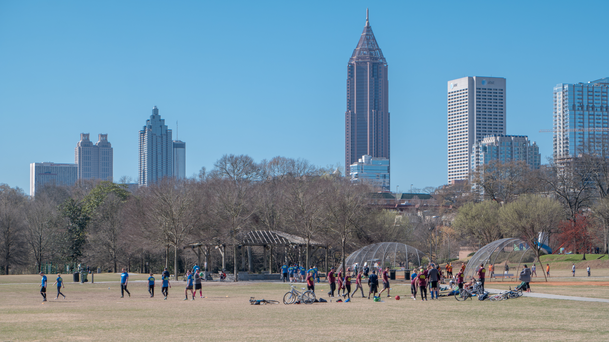
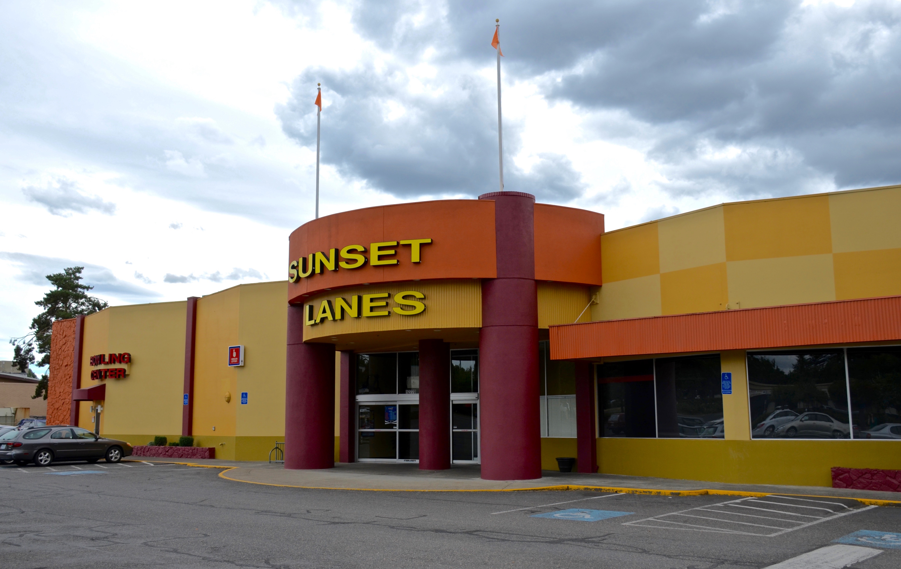
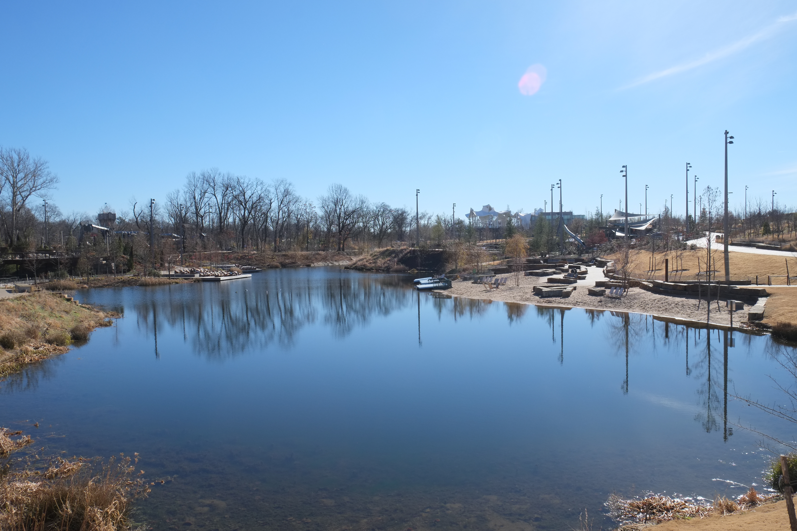
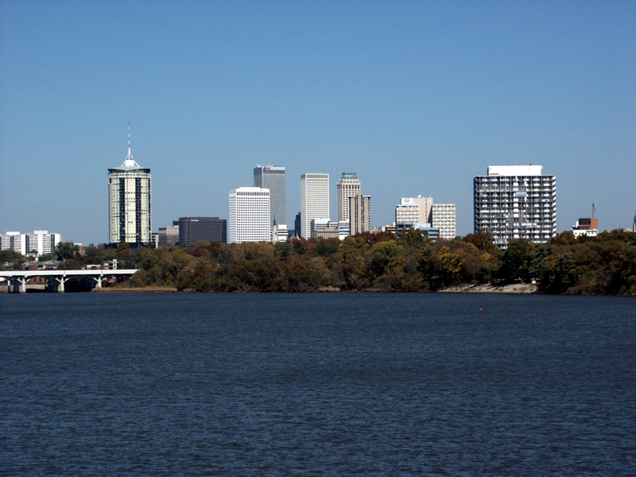

Here is the thing people consistently get wrong about the Tulsa queer scene: they think it starts and ends at the bar. Show up Friday, do your thing, go home, repeat. That's fine, that's a valid Friday night, but it's also the narrowest possible version of what this community actually is, and if that's all you've seen of it, you are missing the better part.
Tulsa has gay sports leagues. Real ones, with seasons and standings and teams serious enough to have matching shirts and inside jokes and players who met at bowling three years ago and are now each other's emergency contacts. That's the part nobody mentions when you first move to Tulsa. Consider it mentioned.
It's April. Spring season is kicking off. If you've been thinking about getting more involved with Tulsa's LGBTQ+ community but haven't found your entry point yet, this is it. Here's what's out there.
The Leagues
Tulsa punches above its weight when it comes to organized queer sports. Here's the full rundown of what's active and where to find them.

Why Sports, Though?
Because queer community isn't just about identity. It's about showing up in the same room as the same people, week after week, until you know their dogs' names and their drink orders and what they were like when they first arrived in this city. And there is something specific about playing on the same team, losing together on a Thursday night, celebrating a genuinely good game, that builds a bond no crowded bar at 1am is going to replicate for you.
People in Tulsa have told me they'd been here two years and barely knew anyone. They joined a bowling league almost as a joke. Six months later those bowling people were their emergency contacts. It sounds like something from a motivational poster, and I apologize for that, but it keeps being true regardless of how it sounds.

Sports also give you a built-in calendar. Same night every week. You show up because your team is counting on you. That kind of regularity is underrated when you're trying to build a real life in a new city or pull yourself out of a social rut.
What If You're Not Athletic?
Then you are exactly the target demographic for most of these leagues. Lambda bowling has people who bowl a 90 and people who bowl a 220 on the same team and everyone goes home with a good story. HotMess built their entire brand around the idea that sports should be accessible to people who were not athletes in high school and have no particular interest in starting now.
The point of any of this is not competition. The point is showing up consistently in the same room with the same people until you know their dogs' names and their drink orders and what city they moved here from. That's community, and gay sports leagues in Tulsa are one of the most reliable ways to build it.

What's Coming Up This Spring
Spring is prime time for LGBTQ+ sports in Tulsa. HotMess spring leagues are either open for registration or filling up right now. Softball season is warming up. Bowling is year-round but spring is when new players tend to jump in.
Check our weekly events guide for any league kickoff nights, registration deadlines, or social meetups tied to these organizations. We pull from their calendars and socials every Monday morning, so if something's happening, it'll show up there.
You can also follow Oklahomans for Equality for announcements, since they serve as a hub for a lot of community sports organizing in Tulsa. Their calendar is one of the most reliable sources we have.
One More Thing
If you run an LGBTQ+ sports league or athletic group in Tulsa that we haven't mentioned here, get at us. We want to know about you. Find us on Instagram or hit the link in our Linktree. We want this guide to be complete, and you know more about your corner of the community than we do.
Tulsa is a better city than it gets credit for. The queer sports scene here is a big part of why. Get off the couch. Find your team.
See what's happening this week in queer Tulsa: Check the weekly events guide.
Find It
Gathering Place (outdoor fields) — 2650 S John Williams Way E, Tulsa, OK 74114
Know something we don't?
Got an event, venue, or org we should be covering? Hit submit and we'll add it.
Submit an Event →